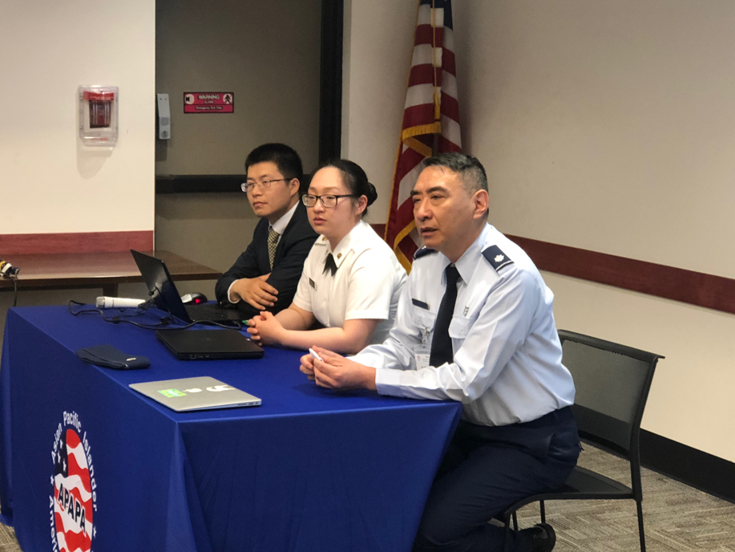

Experiences
Past engagements of the APAPA Seattle Chapeter
APAPA Summer 2020
August Newsletter
July Newsletter
June Newsletter
APAPA Summer 2019
August 21: Graduation Ceremony
 Graduation was conducted in a meeting room in City Hall. We invited all the parents, department heads where the interns contributed their hours. This is a day to demonstrate their learning from the internship experiences and to hear feedbacks from the leaders.
Graduation was conducted in a meeting room in City Hall. We invited all the parents, department heads where the interns contributed their hours. This is a day to demonstrate their learning from the internship experiences and to hear feedbacks from the leaders.
The format of celebration was a discussion forum where the interns sat with our department leaders, exchanged experiences, feedbacks, and future potentials in a working relationship. It was always the most effective to have the youth be involved in such engaging communication format with the leaders.
August 13: Legislative and Regional Issues
Meeting the City’s Chief Policy Advisor who handles all legislative issues for the City. We also met the City’s lobbyist, who will discussed regional issues and how they City handles them.
August 6: City Tour
Tour of City Hall, the Senior Center, Police Station, Fire Administration, and the Maintenance and Operations Center. We saw employees work and the types of equipment, they use to get their jobs done.
August 1: Meet the Mayor and Chief Operating Officer
Mayor John Marchione and Chief Operating Officer Maxine Whattam. We got an overview of what it is like to be the top executives for the City of Redmond and what leadership insights they can pass on to you.
July 14: Internship Training with Legislators and Leaders
 Topics: Profession conducts, attire, forms of governments and policy in local governments.
Topics: Profession conducts, attire, forms of governments and policy in local governments.
APAPA Summer 2018
August 29: Field Trip to State Capitol
A private tour was arranged with Senator Bob Hasegawa. A team of interns and members drove up to Olympia to visit the state capitol. The Senator took a good hour and a half showing us all around the place. Most notably the Senate and House chambers and the Committee debate chambers. Because of our good relationship with the Senator he decided to show us many parts of the capitol often unavailable to the general public. We explored pretty much every nook and cranny there was. We got to see his personal office, the Hallway of past Senators, Committee debate chambers, as well as the Senate meeting rooms behind the chamber. While on the tour, the Senator also took the time to explain in detail, the creation process of a bill. It turns out every bill originates from a plain little tray called a hopper. I found it quite amazing that something so innocuous could be one of the most important things in the building. Hasegawa also explained to us how precincts and committees worked, and stressed the importance of knowing your district, representative, and following the progress of bills with significant impact. Overall this was one of the best and most unique experiences that we took part in this year. We are happy to have been able to provide the interns with such an exclusive opportunity.
August 27: Field Trip to Seattle Mayors Office
A private tour arranged with two Asian Pacific Islander Deputy Mayors. We toured the mayor offices learned its many functions and managements. Had a meeting with the deputy mayors, they had displayed many leadership qualities for the young minds. Both with the background being API leaders, accomplished in leading many different diversities. Being able to ask questions directly has greatly improved their experience in internship, another wonderful example of good people doing the best to help, the opposite of what most often imagine when thinking about politicians. In addition, they educated the youth on the inner workings of the City, which will be of great help as they continue to work on projects to benefit their local areas. Consequently, the youth have walked away with more than learning the functionalities of a local government, but truly inspired with the passion in public service, never stop to inspire, engage and empower.
Augest 23: APAPA Annual Gala and Internship Graduation
This event was held in a formal space with lunch served as our way to proudly present the finished work by our interns, and to acknowledge the participants from junior club for their involvements and volunteer work. We had key note speakers and panels set out for both youth groups to share their take away as they participated this year’s program.
August 2-5: VNA Leadership Convention, Berkley CA
A 3 day trip to California where the interns where able to meet with APAPA leaders both in person and through panels of discussion. This was a great oppertunity to learn from great leaders and motivators as well as providing oppertunities to meet many new people from all over the APAPA branches.
July 1: Internship Orientation with Community Partnership leaders.
This is a comprehensive training session and an introduction between interns and their job leaders. We had four representatives present to talk about the goals of their organization and the detailed opportunities our interns can be a part. Additionally, we invited WA state legislator to come share his journey in politics and as a community leader, his vision to become is leader was more than a title in the office at an older age, but every chance one can empower anyone who cannot otherwise help themselves is just as important leadership quality. We also had four Asian American military personnel to share their experience in the army, air force as professionals, another door to serve while pursuing their profession was one of the most rewarding experiences. Finally, we had business professional came to talk about professional conduct in presenting oneself and interaction with professionals to prepare our interns entering the professional world.
April 1: APAPA Information Night, Redmond Library, Redmond WA
It was the furthest thing from an April fool's joke. We had many participants including youth and families came to learn about APAPA and our summer internship programs, and application procedures. Prior to this meeting, board members have make connections and partnership with various organizations on potential job placements for our interns this year, as well as for younger volunteers. Many walked away with joined membership and turned in applications.
Pre Internship: Camp Kindness Junior Program
Due to popular requests from families, one of the biggest celebration at Seattle Chapter this year is the junior club as an addition to our Youth Leadership Program at our Seattle Chapter. These are younger volunteers work with community partners in the Greater Seattle Areas and preparing their readiness to become our future interns. We had many interested families join as our new members this year, and these younger members also join all the trainings, fieldtrips, seminars and community leadership programs provided by APAPA and Partners. Junior members helped in a community outreach weekly camps as counselors, by helping the kids help the community: Food Bank, Animal Shelter, Green Belt, Beach Cleaning, Senior Homes.